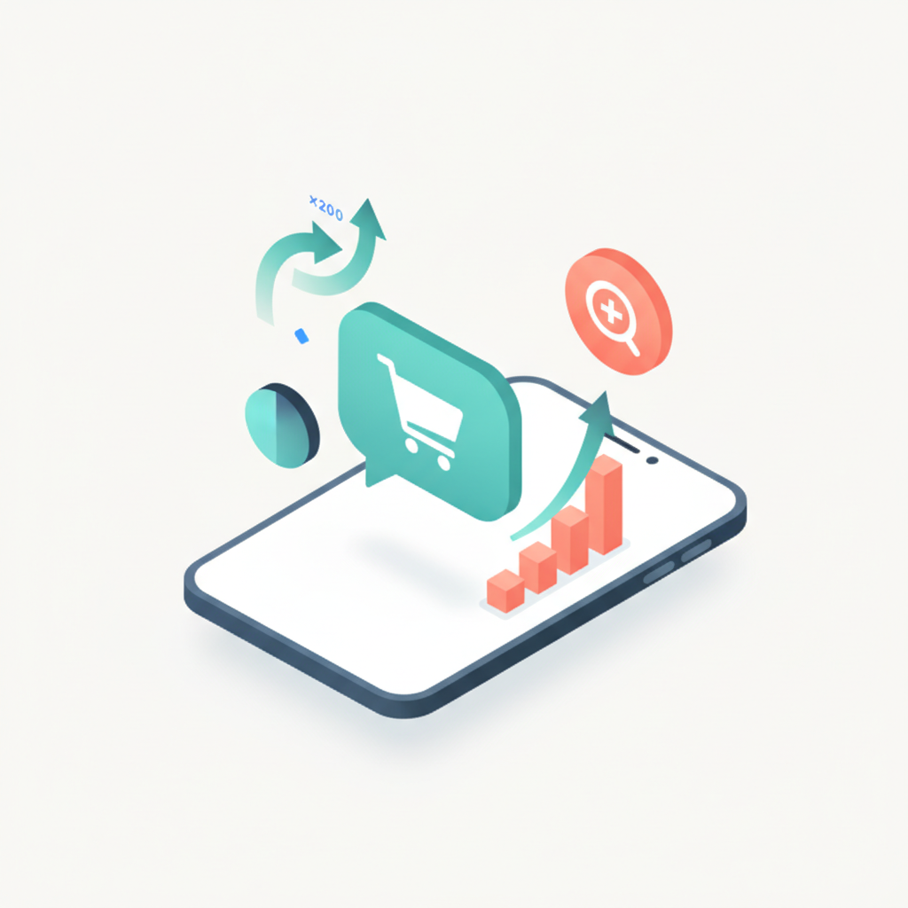
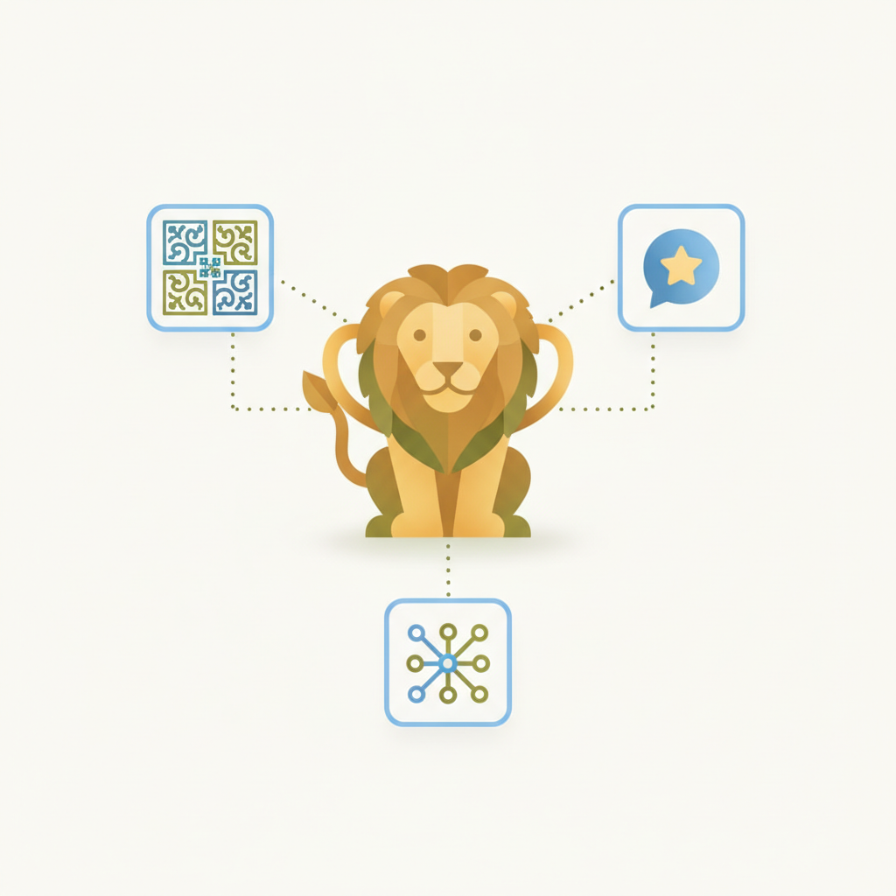
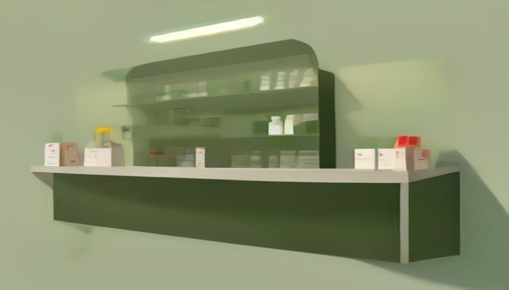
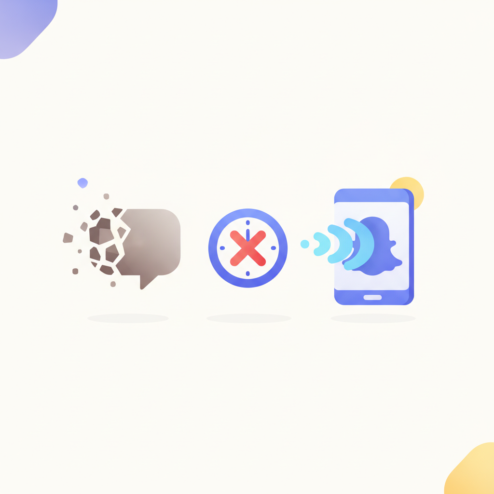
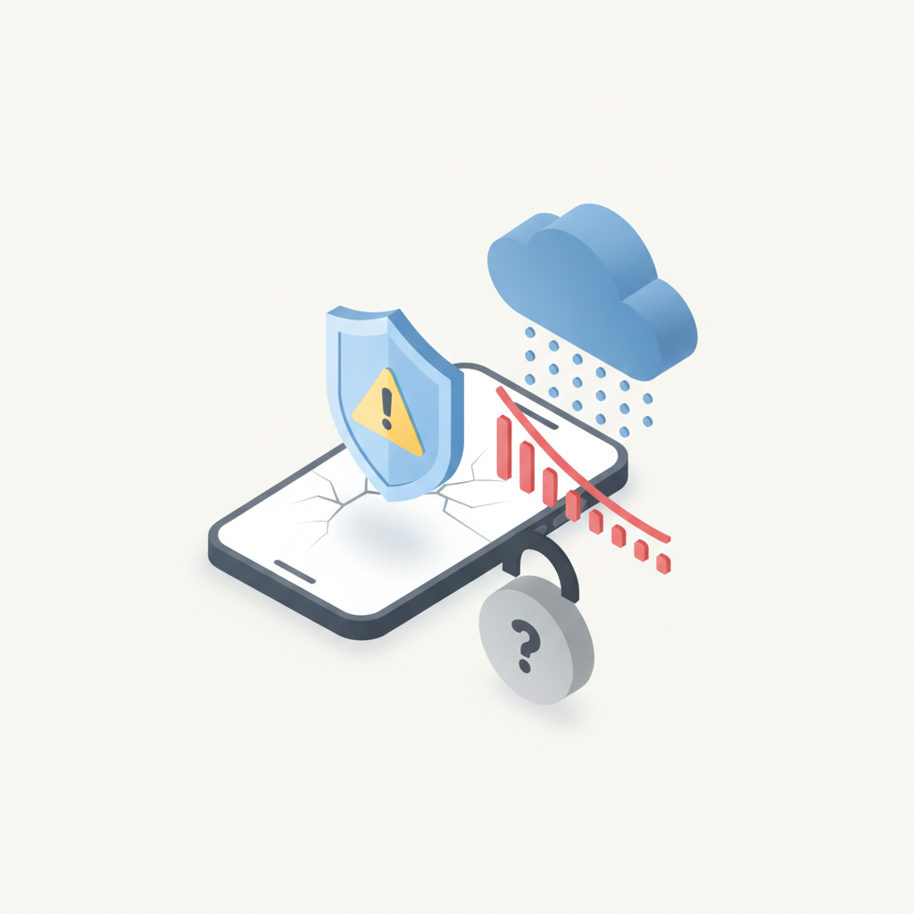
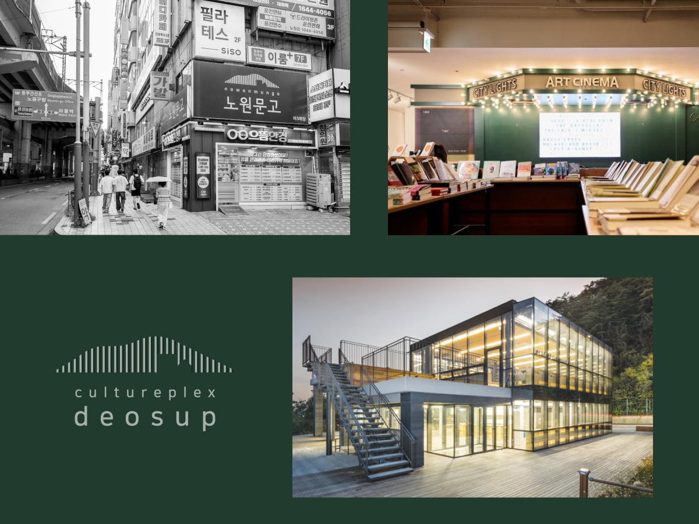

안녕하세요! 금요일 마케팅 소식 전해드립니다 😊 오늘은 우버이츠 캠페인 이야기가 단연 인상 깊습니다. 배달 앱을 단순 주문 도구가 아닌 엔터테인먼트 미디어로 재정의해 체류 시간을 폭발적으로 끌어올린 이 전략은, 칸라이언즈 수상작으로도 이름을 올렸습니다. "우리 앱에서 무엇을 할 수 있는가"가 아니라 "우리 앱 안에서 사람들이 어떤 시간을 보내는가"로 질문을 바꿨다는 점에서, 플랫폼 브랜딩의 방향을 다시 생각해보게 하는 사례입니다.
마케팅 뉴스에서는 소비자 행동 변화와 세대별 콘텐츠 전략이 함께 주요하게 다뤄집니다. 생성형 AI가 추천한 제품을 실제로 구매한 소비자가 49.9%에 달했다는 조사 결과는, AI가 검색 이전 단계부터 구매 경로 자체를 바꾸고 있다는 신호입니다. 한편 Z세대·알파세대를 겨냥할 때 유행이 지난 밈을 뒤늦게 활용하면 브랜드 신뢰를 오히려 깎아먹는다는 분석도 함께 나왔습니다. 속도보다 타이밍, 타이밍보다 맥락이 중요하다는 점을 짚어주는 내용입니다.
금요일 아침도 좋은 인사이트로 힘차게 시작하시고, 이번 한 주도 수고 많으셨습니다! 🙌

1세일즈포스가 20개국 커머스 전문가 3,450명을 대상으로 발표한 '글로벌 커머스 트렌드 보고서'에 따르면, 소비자가 쇼핑 여정 첫 단계에서 AI 어시스턴트를 활용하는 비율이 전년 대비 200% 증가했다. AI 채팅을 통한 커머스 사이트 유입 트래픽도 분기별로 전년 동기 대비 150~428% 늘었다. 국내 커머스 기업의 48%가 AI 검색 플랫폼을 적극 활용 중으로, 마케터는 검색 중심의 소비자 여정 전략을 AI 기반으로 전환할 시점이다.
› 2프레인글로벌과 한국PR학회 공동 조사에 따르면 최근 3개월 내 생성형 AI가 추천한 제품·서비스를 실제 구매한 소비자가 49.9%에 달했다. 소비자는 AI에 자신의 상황과 취향을 설명해 추천을 받은 뒤 다른 출처로 재검증하는 새로운 구매 패턴을 보이고 있다. AI가 단순 정보 탐색을 넘어 구매 의사결정에 직접 개입하는 만큼, 마케터는 AI 추천 결과에서 브랜드가 노출되는 방식을 전략적으로 관리해야 한다.
›
3WARC가 발표한 '크리에이티브 이펙티브니스 라이언즈 2026 인사이트' 보고서에 따르면, 문화적 인사이트 활용·소비자 직접 참여 경험 설계·크리에이터와 플랫폼 특성 이해가 크리에이티브를 비즈니스 성과로 연결하는 핵심 요인으로 나타났다. 단순한 아이디어의 참신함보다 실제 효과성이 수상 기준이 되고 있다는 점에서, 마케터는 캠페인 기획 단계부터 성과 연결 논리를 구체화할 필요가 있다.
›
4올리브영이 리테일미디어(RMN) 사업을 본격화하며 삼성전자, 넷플릭스 등 외부 브랜드를 광고주로 유치하는 전략을 추진 중이다. 온·오프라인 통합 리테일미디어를 총괄하는 담당자들이 1P 데이터 기반 성과 측정 체계와 광고 상품 기획 방향을 공개했다. 자사 고객 데이터를 광고 인벤토리로 전환하는 리테일미디어 모델이 국내에서도 확산되고 있어, 브랜드 마케터는 올리브영 플랫폼 내 광고 집행 전략을 새롭게 검토할 시점이다.
›
5옴니콤과 스냅챗이 공동 분석한 보고서에 따르면, 브랜드가 유행하는 밈을 뒤늦게 활용하면 Z세대와 알파세대로부터 '시대에 뒤처진 아저씨'로 인식되는 역효과가 발생한다. 이 세대의 인터넷 문화는 빠르게 변하고 내부 규칙이 복잡해 피상적 모방으로는 공감을 얻기 어렵다. 마케터는 밈을 따라 하는 전략 대신 분위기와 맥락을 먼저 읽고 플랫폼 문화에 유기적으로 녹아드는 접근이 필요하다.
›
6개인정보 보호 서비스 인코그니가 미국 성인 1,000명을 대상으로 실시한 조사에 따르면, AI 생성 콘텐츠 확산과 개인정보 노출 우려가 온라인에 대한 신뢰를 떨어뜨리는 주요 원인으로 나타났다. 디지털 피로를 느끼는 이용자가 늘면서 소셜미디어 이용 시간을 줄이는 행동 변화도 관찰됐다. 마케터는 AI 생성 콘텐츠에 대한 소비자 불신이 높아지는 환경에서 브랜드 신뢰도를 유지하기 위한 투명성 전략을 강화할 필요가 있다.
› 7칸라이언즈서울이 소개한 우버이츠 캠페인은 배달 앱을 단순 주문 도구가 아닌 엔터테인먼트 미디어로 재정의해 체류 시간을 폭발적으로 늘린 사례다. 미디어 채널의 본질적 역할을 재해석한 이 캠페인은 칸라이언즈 인게이지먼트 트랙에서 수상했다. 플랫폼의 기존 용도를 넘어 소비자 몰입을 설계하는 크리에이티브 전략이 광고 효과를 높이는 핵심 접근으로 주목받고 있다.
›5년간 앱을 뜯어 온 화이트 해커가 말하는 에이전트 권한 설계 3원칙

책이 아니라 ‘사람’을 빌려주는 도서관이 있습니다. 정확히는 한 사람의 사유와 철학이 담긴 서재를 통째로 내어주죠. 서울 강북구 수유동 더숲 아카데미하우스의 ‘인물 도서관’입니다.
아티클 읽기 →브랜드 진단부터 지금 당장 해야 할 우선순위까지,
30분 무료 상담에서 함께 정리해드려요.
이미 수십 개 브랜드가 상담받았습니다.
내 브랜드처럼, 함께 고민하는 팀원의 마음으로 봅니다.
스타트업 대표·마케팅 담당자를 위한 30분